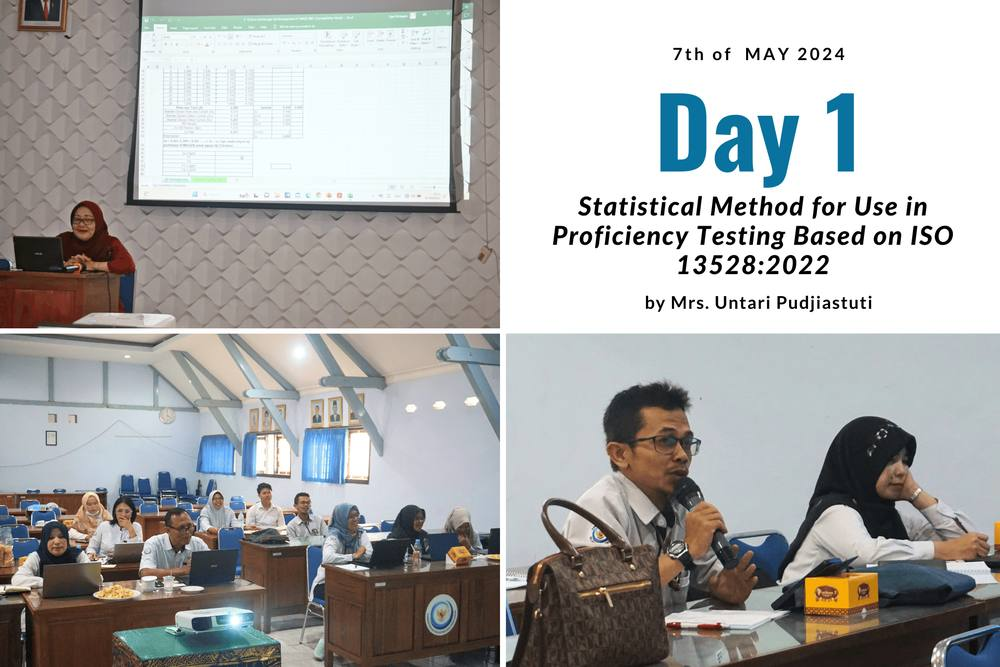
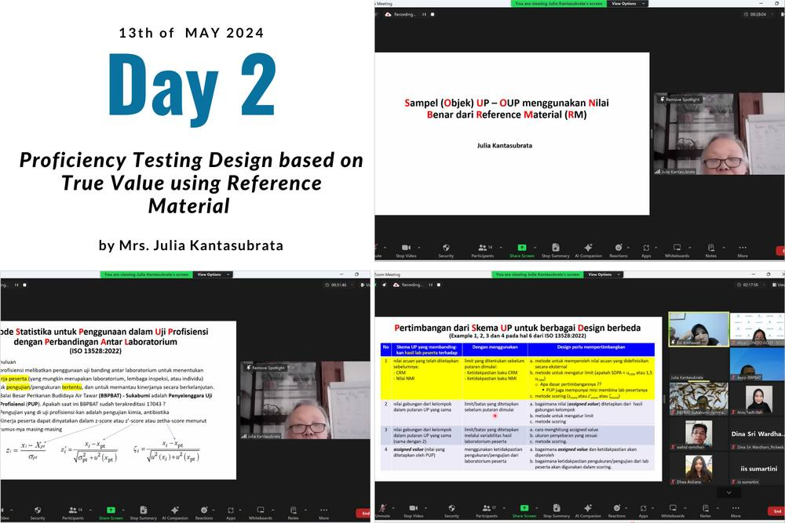

Strengthening Proficiency Testing Standards: Advanced Training in Proficiency Testing Design and Data Processing

BBPBAT Sukabumi, a leading institution in freshwater aquaculture, achieved significant success during GQSP Phase 1 by becoming accredited as a Proficiency Testing Provider. Since then, BBPBAT has provided proficiency testing services, particularly for detecting antibiotic compounds in shrimp, to various institutions. However, challenges in data processing, largely due to the variations in testing methods and sample data, have underscored the need for further capacity building. Recognizing these challenges, GQSP Phase 2 focuses on strengthening PTPs in the fisheries sector to ensure the accuracy and reliability of test results. This initiative aims to bolster the food safety framework in Indonesia, ensuring that fisheries products meet stringent quality and safety standards both domestically and internationally.
Key Trainings for PTP Personnel Development
Two essential training sessions were conducted as part of this initiative:
- Statistical Methods for Use in Proficiency Testing Based on ISO 13528:2022
This first training session was held on May 7, 2024, at BBPBAT Sukabumi, led by Mrs. Untari Pudjiastuti. The focus was on statistical methods for testing homogeneity and stability based on the latest ISO standards. The training emphasized random selection of proficiency testing (PT) items, selection procedures for test methods to ensure parameter homogeneity, and what actions to take if test items lack homogeneity or stability. Participants also learned about robust statistical techniques for determining assigned values through consensus and uncertainty assessment. - Proficiency Testing Design Based on True Value Using Reference Material
Conducted online on May 13, 2024, and led by Mrs. Julia Kantasubrata, this session focused on designing proficiency testing schemes that incorporate true value principles. The goal was to enhance PTP personnel’s ability to ensure the accuracy and reliability of test results using reference materials. Thirteen BBPBAT personnel attended the session, gaining insights into methods that can improve the overall reliability of their proficiency testing processes.


The Road Ahead for BBPBAT Sukabumi and the Fisheries Sector
These training sessions mark an important step toward strengthening the PTP framework at BBPBAT Sukabumi. By improving the competencies of PTP personnel in both data processing and proficiency testing design, the project seeks to enhance the quality of testing services available to Indonesia’s fisheries sector. GQSP Phase 2 will continue supporting BBPBAT and other related institutions through technical assistance, capacity-building programs, and ongoing training initiatives. Together, these efforts aim to improve food safety standards and ensure the quality of fisheries products, thereby enhancing Indonesia's competitiveness in the global market. The collaboration between GQSP Indonesia and BBPBAT Sukabumi is an excellent example of how targeted support and training can empower institutions to elevate their services, ultimately contributing to stronger quality infrastructure across the fisheries industry